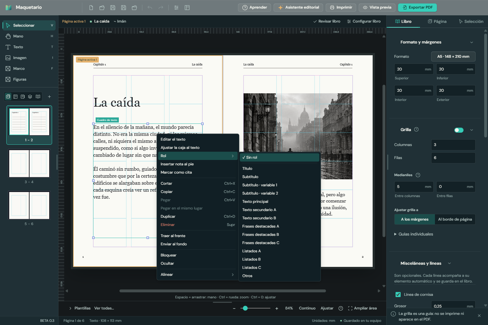
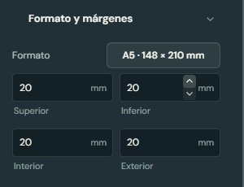
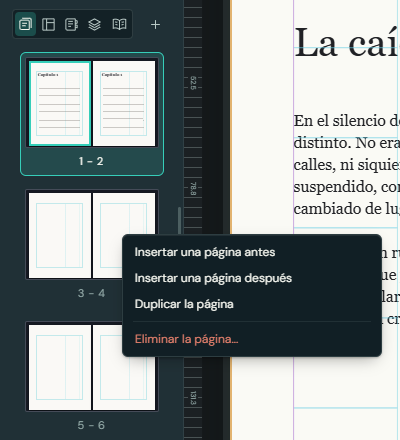
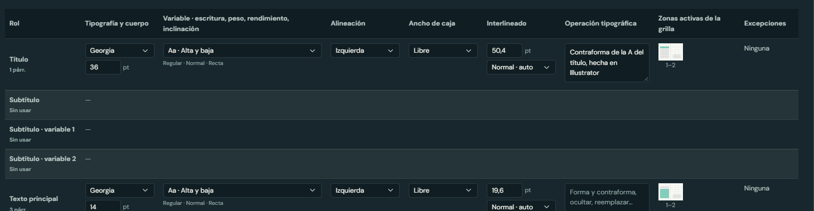

Maquetario
MaquetarioMaquetario BETA 0.3
Lo que se sumó desde la BETA 0.2: la segunda tanda de pedidos, las respuestas de la cátedra sobre la pauta y la primera versión para Mac. Qué probar y qué devolución nos sirve.
MaquetarioLo que se sumó desde la BETA 0.2: la segunda tanda de pedidos, las respuestas de la cátedra sobre la pauta y la primera versión para Mac. Qué probar y qué devolución nos sirve.
BETA 0.3 trae lo que pidieron después de probar la BETA 0.2: el clic derecho con las funciones de siempre, flechitas para ajustar los valores y la Cubierta en el panel de la izquierda. Suma los dos ajustes que respondió la cátedra sobre la pauta y deja lista la versión para Mac. Todo lo de la BETA 0.2 sigue igual.


| Dónde | Qué ofrece |
|---|---|
| Un campo, o un texto mientras se escribe | Cortar, copiar, pegar, seleccionar todo, deshacer y rehacer. Si una palabra está mal escrita, las sugerencias de ortografía y "Agregar al diccionario". |
| Cualquier objeto | Cortar, copiar, pegar, duplicar y eliminar; traer al frente y enviar al fondo; bloquear y ocultar; alinear. |
| Una caja de texto, además | Editar el texto, ajustar la caja al texto, elegir el rol, insertar una nota al pie y marcar como cita. |
| Una imagen, además | Reemplazar la imagen (en un marco vacío, colocar una). |
| La página vacía | Pegar, también en el mismo lugar; agregar, duplicar o eliminar la página; agregar una guía; mostrar u ocultar la grilla. |
| Una miniatura de página | Insertar una página antes o después, duplicarla o eliminarla. |

| Respuesta | Qué hicimos |
|---|---|
| Interlineado: el valor en puntos, con la leyenda "ajustado", "normal" o "amplio". | En la pauta descargada el interlineado se lee en puntos y, debajo, su leyenda. En la planilla CSV, "19,6 pt · Normal". |
| Operación tipográfica: un campo para que el estudiante complete lo que falta, porque lo experimental (forma y contraforma, ocultar, reemplazar) se hace en Illustrator. | Es un campo libre de tres líneas, con esos ejemplos como guía. Lo que el programa detecta solo (color aplicado, interletrado) sigue apareciendo debajo. |

Lo ideal sigue siendo una novela real, como las que están armando los alumnos.
Gracias por la devolución de la BETA 0.2 y por pasarle las preguntas a la cátedra. Cualquier cosa, por el canal de siempre.